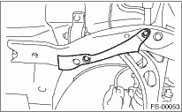
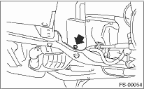
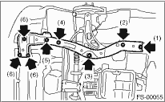

FRONT SUSPENSION > Sub Frame
1. Lift the vehicle.
2. Remove the under cover.
3. Remove the bolt cover.

4. Remove the clip.

5. Remove the sub frame.
NOTE:
Loosen bolt (1) and leave a few threads caught, then remove the bolts in the order of (2), (3), (4), (5), and (6).
